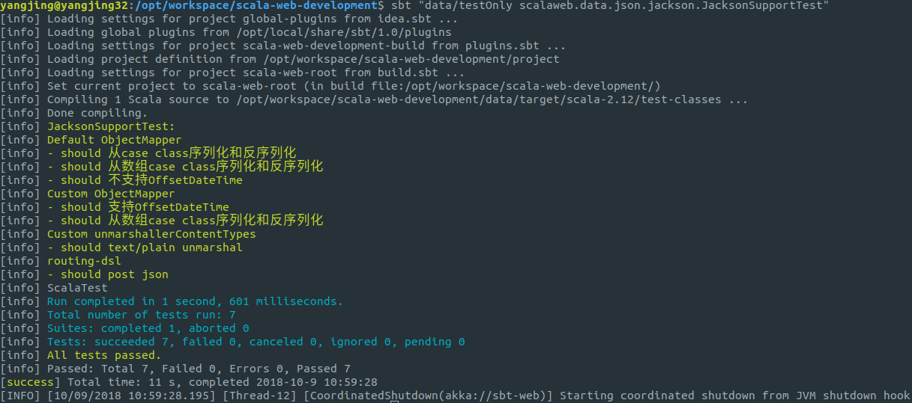

JSON
Jackson
Jackson 是Java生态圈里最流行的JSON序列化库，它的官方网站是：https://github.com/FasterXML/jackson。
为什么选择 Jackson 而不是更Scala范的 play-json、 circe、 json4s 等JSON序列化库呢？这里主要考虑是 Jackson 在Java生态圈里更流行，相对熟悉的人更多，可以一定程度上减轻Javaer们使用Scala时上手的难度。 同时，Jackson支持对大部分Java和Scala下的集合库、数据类型的JSON序列化，而大部分Scala范的JSON库只支持Scala的集合库、case class和数据类型。当你的应用里同时使用Java和Scala两种不同的集合类型和Java style class与Scala case class时，Jackson都可以对其完美支持。
JacksonSupport
基于 Akka HTTP 的 marshal/unmarshal 机制，可以很容易的集成各种序列化/反序列化工具。akka-http-json 这套库就提供了9种不同的JSON序列化/反序列化方安供用户选择。
我们需要在 sbt 里添加依赖：
libraryDependencies += "de.heikoseeberger" %% "akka-http-jackson" % "1.22.0"
使用默认的 akka-http-jackson
"Default ObjectMapper" should {
import de.heikoseeberger.akkahttpjackson.JacksonSupport._
"从case class序列化和反序列化" in {
val foo = Foo("bar", 2018)
val result = Marshal(foo).to[RequestEntity].flatMap(Unmarshal(_).to[Foo]).futureValue
foo mustBe result
}
"从数组case class序列化和反序列化" in {
val foos = Seq(Foo("bar", 2018))
val result = Marshal(foos).to[RequestEntity].flatMap(Unmarshal(_).to[Seq[Foo]]).futureValue
foos mustBe result
}
"不支持OffsetDateTime" in {
val foo = FooTime("羊八井", OffsetDateTime.now())
val requestEntity = Marshal(foo).to[RequestEntity].futureValue
intercept[MismatchedInputException] {
throw Unmarshal(requestEntity).to[Foo].failed.futureValue
}
}
}可以看到，默认的 akka-http-jackson 不支持 Java 8 新提供的时间/日期类型序列化，这是因为它默认使用的 Jackson ObjectMapper 没有加载 JavaTimeModule 这个模块在 https://github.com/FasterXML/jackson-modules-java8/tree/master/datetime 可以找到JavaTimeModule这个模块的更多详细说明。
/**
* Automatic to and from JSON marshalling/unmarshalling usung an in-scope Jackon's ObjectMapper
*/
object JacksonSupport extends JacksonSupport {
val defaultObjectMapper: ObjectMapper =
new ObjectMapper().registerModule(DefaultScalaModule)
}
通过隐式值使用自定义的 ObjectMapper
首先来看看 akka-http-jackson 定义的 JacksonSupport.scala，它通过两个隐式函数实现了 Akka HTTP 的 Marshal/Unmarshal 功能。
/**
* HTTP entity => `A`
*/
implicit def unmarshaller[A](
implicit ct: TypeTag[A],
objectMapper: ObjectMapper = defaultObjectMapper
): FromEntityUnmarshaller[A] =
jsonStringUnmarshaller.map(
data => objectMapper.readValue(data, typeReference[A]).asInstanceOf[A]
)
/**
* `A` => HTTP entity
*/
implicit def marshaller[Object](
implicit objectMapper: ObjectMapper = defaultObjectMapper
): ToEntityMarshaller[Object] =
Jackson.marshaller[Object](objectMapper)
可以看到隐式函数又分别定义了两个和一个隐式参数，而 objectMapper: ObjectMapper = defaultObjectMaper这个隐式参数定义了默认值，这样在使用时我们就可以提供自定义的 ObjectMapper 来替代默认的 defaultObjectMapper。先来看看怎样使用自定义的 ObjectMapper：
"Custom ObjectMapper" should {
import de.heikoseeberger.akkahttpjackson.JacksonSupport._
implicit val objectMapper: ObjectMapper = helloscala.common.json.Jackson.defaultObjectMapper
"支持OffsetDateTime" in {
val foo = FooTime("羊八井", OffsetDateTime.now())
val requestEntity = Marshal(foo).to[RequestEntity].futureValue
val result = Unmarshal(requestEntity).to[FooTime].futureValue
foo mustBe result
}
"从数组case class序列化和反序列化" in {
val foos = Seq(FooTime("羊八井", OffsetDateTime.now()))
val results = Marshal(foos).to[RequestEntity].flatMap(Unmarshal(_).to[Seq[FooTime]]).futureValue
foos mustBe results
}
}通过在代码上下文中定义一个隐式值：implicit val objectMapper: ObjectMapper = .... （变量名可以取任何名字，不需要是objectMapper。但是需要保证在代码上下文中只有一个ObjectMapper隐式类型。），Scala 编译器在编译代码时将使用定义的隐式值传入函数 unmarshaller 或 marshaller 中以替代函数定义时设置的默认值。
自定义 ObjectMapper 定义在object Jackson.scala：
implicit val defaultObjectMapper: ObjectMapper = getObjectMapper
private def getObjectMapper: ObjectMapper =
new ObjectMapper().findAndRegisterModules
//.setDateFormat(new SimpleDateFormat("yyyy-MM-dd HH:mm:ss"))
//.enable(MapperFeature.SORT_PROPERTIES_ALPHABETICALLY)
.enable(JsonParser.Feature.ALLOW_UNQUOTED_FIELD_NAMES)
.enable(JsonParser.Feature.ALLOW_SINGLE_QUOTES)
.enable(DeserializationFeature.ACCEPT_SINGLE_VALUE_AS_ARRAY)
.enable(DeserializationFeature.USE_BIG_INTEGER_FOR_INTS)
.disable(DeserializationFeature.FAIL_ON_IGNORED_PROPERTIES)
.disable(DeserializationFeature.FAIL_ON_UNKNOWN_PROPERTIES)
.disable(DeserializationFeature.ADJUST_DATES_TO_CONTEXT_TIME_ZONE) // 禁止反序列化时将时区转换为 Z
.disable(SerializationFeature.FAIL_ON_EMPTY_BEANS) // 允许序列化空的对象
.disable(SerializationFeature.WRITE_DATES_AS_TIMESTAMPS) // 日期时间类型不序列化成时间戳
.disable(SerializationFeature.WRITE_DATE_KEYS_AS_TIMESTAMPS) // 日期时间类型不序列化成时间戳
.setSerializationInclusion(JsonInclude.Include.NON_NULL) // 序列化时不包含null的键自定义反序列化时允许的MediaType类型
默认情况下，JacksonSupport要求客户端提交的HTTP请求必需设置Content-Type的mime-type类型为：application/json，但很多时候会遇到不那么规范的客户端，它们并未正确的设置HTTP请求头。这时我们可以自定义JacksonSupport让它在反序列化时支持其它Content-Type：这里定义除了application/json外还支持text/plain类型的请求。
"Custom unmarshallerContentTypes" should {
final object CustomJacksonSupport extends JacksonSupport {
override def unmarshallerContentTypes: immutable.Seq[ContentTypeRange] =
List(MediaTypes.`text/plain`, MediaTypes.`application/json`)
}
"text/plain unmarshal failed" in {
import de.heikoseeberger.akkahttpjackson.JacksonSupport._
val entity = HttpEntity("""{"name": "羊八井", "since": 2018}""")
entity.contentType.mediaType mustBe MediaTypes.`text/plain`
intercept[UnsupportedContentTypeException] {
throw Unmarshal(entity).to[Foo].failed.futureValue
}
}
"text/plain unmarshal" in {
import CustomJacksonSupport._
val entity = HttpEntity("""{"name": "羊八井", "since": 2018}""")
entity.contentType.mediaType mustBe MediaTypes.`text/plain`
val foo = Unmarshal(entity).to[Foo].futureValue
foo mustBe Foo("羊八井", 2018)
}
}在 routing DSL 里使用
在 Akka HTTP Routing DSL 里使用Jackson来反序列化/序列化JSON就非常简单了。通过entity(as[FooTime])指令来将提交的JSON数据解析成 FooTime 样本类（将调用 unmarshaller[A] 隐式函数），在complete函数响应结果时将 FooTime 对象序列化成JSON字符串并设置对应的Content-Type（调用 marshaller[A] 隐式函数）。
"routing-dsl" should {
import akka.http.scaladsl.server.Directives._
import de.heikoseeberger.akkahttpjackson.JacksonSupport._
implicit val objectMapper: ObjectMapper = helloscala.common.json.Jackson.defaultObjectMapper
val route: Route = path("api") {
post {
entity(as[FooTime]) { foo =>
complete(foo.copy(since = foo.since.plusYears(1)))
}
}
}
"post json" in {
val foo = FooTime("羊八井", OffsetDateTime.now())
Post("/api", foo) ~> route ~> check {
status mustBe StatusCodes.OK
contentType.mediaType mustBe MediaTypes.`application/json`
val payload = responseAs[FooTime]
foo.name mustBe payload.name
foo.since.isBefore(payload.since) mustBe true
}
}
}总结
Akka HTTP通过强大的 Marshal/Unmarshal 机制来实现数据的序列/反序列化，作为一款工具库 Akka HTTP 提供了足够的灵活性，用户可以选择自己喜欢的序列/反序列化工具和使用方式。对于JSON，推荐从 https://github.com/hseeberger/akka-http-json 开始，上面很有可能找到你想要的。同时，akka-http-json也是一个不错的学习 Akka HTTP Marshal/Unmarshal 机制的样例。
完整的测试代码在：data/src/test/scala/scalaweb/data/json/jackson/JacksonSupportTest.scala，可以通过以下命令来运行它：
sbt "data/testOnly scalaweb.data.json.jackson.JacksonSupportTest"
测试结果示例： 